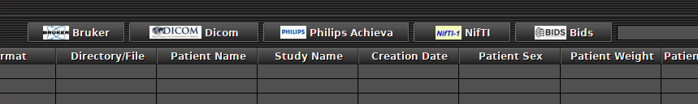
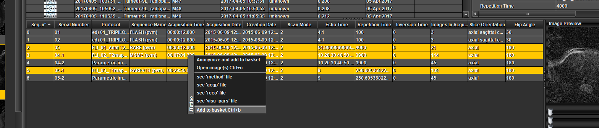
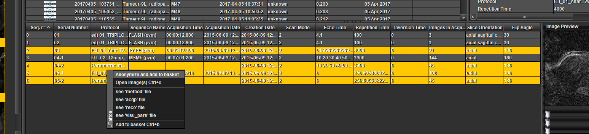
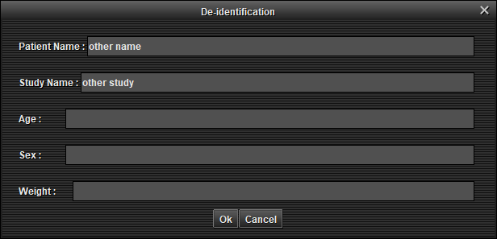
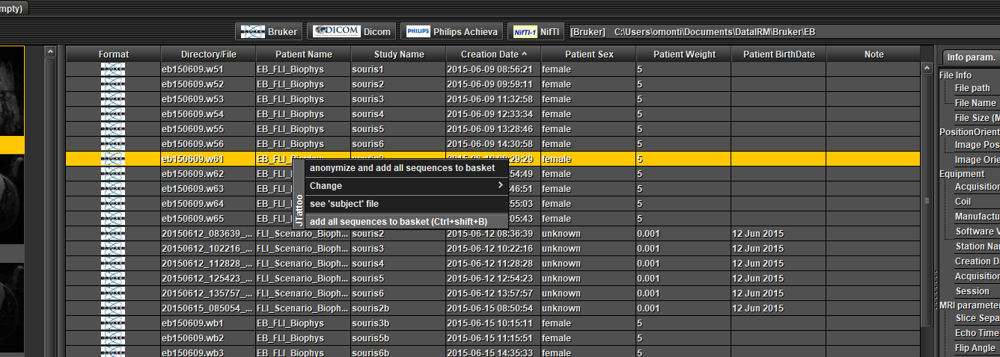
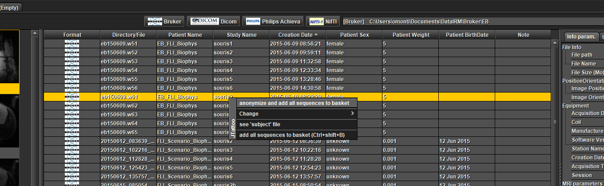

Viewer - Export to Nifti with options - Use of ImageJ - Set default IRM location
(under construction)This section explains how to use MRI File Manager
Click on one of the buttons 'Bruker', 'Dicom', 'Philips' or 'Nifti' to choose the data folder  (preview)
A dialog box opens and choose the root directory containing the data IRM. (preview)
A list of data appears in 'data browser' table.
Select a data in 'data browser' table (mouse click only once), a list of MRI sequences appears in the table below and image thumbnails are shown on the left.
For each selected sequence, MRI parameters and image preview are displayed.
If you double-click on a sequence, the image opens with the ImageJ interface (you can open several images at once).
This section explains how to convert data to Nifti-1 (file by file or all data).
There are several possibilities :
File by file without anonymization :
Select one or several sequences in the table at the bottom (Ctrl + mouse left click), open a pop-up menu by clicking the right mouse button and choose 'Add to basket'  (preview)
File by file with anonymization :
Select one or several sequences in the table at the bottom (Ctrl + mouse left click), open a pop-up menu by clicking the right mouse button and choose 'Anonymize and add to basket'  (preview)
An anonymization window appears, modify the fields and 'Ok'  (preview)
Full data without anonymization :
Select one or several data in the table at the top (Ctrl + mouse left click), open a pop-up menu by clicking the right mouse button and choose 'add all sequences to basket'  (preview)
Full data with anonymization :
Select one or several data in the table at the top (Ctrl + mouse left click), open a pop-up menu by clicking the right mouse button and choose 'anonymize and add all sequences to basket'  (preview)
An anonymization window appears, modify the fields and 'Ok' (preview)